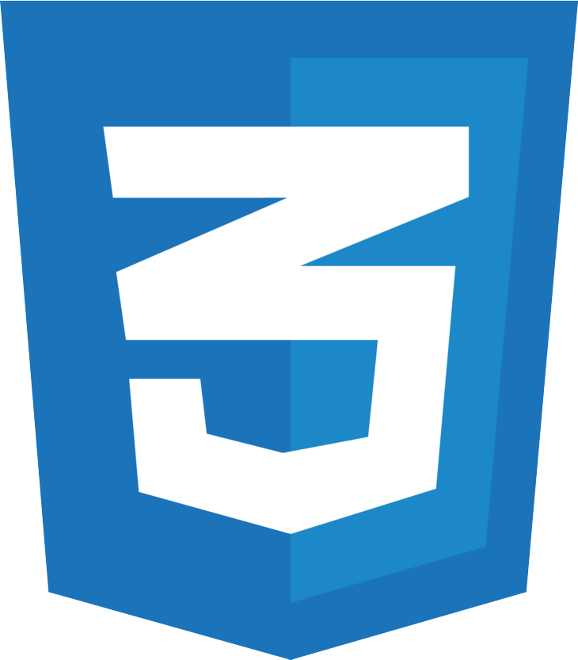

Python
Python
Desenvolvedor Back-end
Olá, eu sou Matheus Machado, desenvolvedor de software com foco principal em back-end utilizando Python, Flask e bancos de dados relacionais. Ao longo dos meus projetos, também tive contato com tecnologias de front-end como HTML, CSS e JavaScript, e atualmente venho expandindo essa experiência por meio do desenvolvimento de aplicações full stack, buscando construir soluções cada vez mais completas. Atualmente curso Análise e Desenvolvimento de Sistemas no Instituto Infnet e estou em busca de uma oportunidade de estágio na área de desenvolvimento de software.
Tecnologias
Tenho o Python como principal linguagem de programação e utilizo Flask para desenvolvimento de aplicações e integração com bancos de dados utilizando SQL e SQLite. Também possuo experiência com HTML, CSS e JavaScript, tecnologias que venho utilizando na construção de projetos full stack. Além disso, utilizo Git e GitHub para versionamento, organização e documentação dos projetos.
Python
Flask
 SQL
SQL
 SQLite
SQLite
 HTML
HTML

CSS JavaScript
JavaScript
 Git
Git
Github
 VS Code
VS Code
Projetos

Sistema de protocolos
Projeto desenvolvido em Python para controle e organização de protocolos de atendimento. O sistema gera códigos sequenciais automaticamente, permite atualizar a situação de cada protocolo e exibe os registros em uma tabela interativa, com opção de organizar dados por nome, código, data e mais.

Gerenciador Financeiro
Sistema Web de gestão financeira desenvolvido com Python, Flask, SQLite, HTML, CSS e JS. A aplicação permite registrar receitas, despesas avulsas, gastos fixos, além de oferecer visualização gráfica do orçamento mensal, uma área de simulação de economia, filtragem de dados por prioridade, ordenação por preço e mais.

Gerador de senhas
Gerador de senhas desenvolvido em Python, usando as bibliotecas "random" para geração aleatória e "string" para manipulação dos conjuntos de caracteres. Ele permite criar senhas aleatórias com letras, números e símbolos, oferecendo mais segurança para contas e dados.